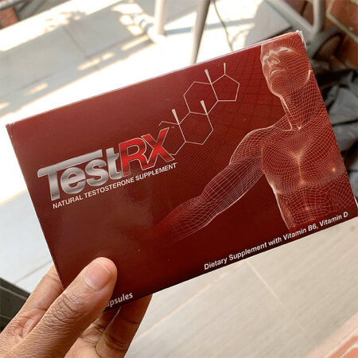
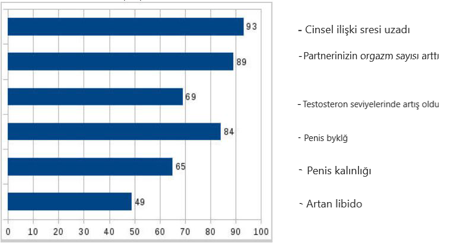
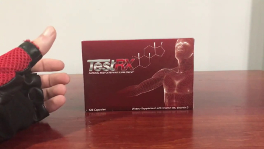

Penisinizi 30 günde en az +8 cm büyütebilecek ve arka arkaya 5 kez seks yapabileceksiniz.
Türkiye Cumhuriyeti Sağlık Bakanlığı, Cinsel sorunlara bitkisel çözümler sertifikasını almaya hak kazandı.
Benim adım Uzm. Dr. Soner ATİLLA ve şimdi sizlere bilimsel bir penis büyütme ve cinsel ilişki uzatma yöntemi açıklayacağım.
Bu yöntemin birkaç belirgin etkisi vardır:
- Penisinizi uzatır ve kalınlaştırır.
- Sertleşme problemleriniz ortadan kalkacaktır.
- Cinsel ilişki süresi en az 20 dakikaya ulaşacaktır.
- Seks hayatınız gelişecektir.
- Kız arkadaşınız arka arkaya 5 kez orgazm olabilecektir.
Size yukarıdaki bu maddeleri sadece birer fikir olarak söylemiyorum, bilimsel deneylerin sonuçlarını göstererek bunu kanıtlayabilirim.
Bu sorunu ilk kez çözmeye çalışıyorsanız veya başka yollarla çözmek için daha önce birçok kez denediyseniz - bu hiç önemli değil. Sizin için iyi haberlerimiz var.
Bu sorunu daha önce herhangi bir ilaçla çözmeye çalıştıysanız, tüm girişimlerinizin yararsız olduğunu ve kısmi bir etki olsa bile, bunun sadece ereksiyonunuzda size yardımcı olduğunu ve geçici bir etkisi olduğunu biliyorsunuzdur.
Eğer bu ilk denemenizse, o zaman şanslısınız! Şimdi doğru yolu öğrenecek ve işe yaramaz ürünlere harcayabileceğiniz yüklü paralardan tasarruf edeceksiniz.
Size asistanım Kadir'in gerçek bir fotoğrafını göstermek istiyorum. Penisi 7 cm büyüdü ve cinsel ilişki süresi 15 dakika uzadı.
Bu belirtlilenler, ilgili yöntemi en az 2 hafta düzenli kullandıktan sonraki etkileridir:
- Penisi pompa veya jel kullanmadan 7 cm büyüdü.
- Penis duvarı kalınlığı % 63 arttı ve arka arkaya 5 kez seks yapabiliyor.
- Ne zaman seks yapmak isterse, penisi çelik kadar sertti.
- Ereksiyonu uzun sürüyor ve partnerinin orgazm sayısı arttı .
- Cinsel dürtü ve testosteron seviyeleri yükselir, yataktaki enerjisi ve penis hassasiyeti artar.
Kadir’in aldığı sonuçlar şaşırtıcı değil.
Çok sayıda deney yaptıktan ve gerekli testlerin tümünün tamamlanmasının ardından bu tür sonuçlar bilimsel olarak doğrulanmaktadır. Çalışmalar sırasında, gönüllülerin test öncesi ve sonrası cinsel organlarının boyutlarının yanı sıra testosteron seviyelerini de ölçtük. Ve bu yöntemin etkinliği vakaların% 97'sinde doğrulandı. Ve sadece gönüllüler tarafından değil, aynı zamanda gerçek müşteriler tarafından da doğrulandı. Hikayeleri çok ilginçti:
Siz de yatakta daha güçlü olmak istemez misiniz? Bu ürünü kullandıktan sonra asla yatakta yorulmuyorum. 34 yaşındayım. Penisim 18 cm uzunluğunda ve adeta seksi yeniden keşfettim!
Etkisi olmayan düşük kaliteli ürünlerden nefret ediyorum. Arkadaşlarım ve ben daha önce birkaç tanesini test ettik ve inanın bana gerçekten işe yarayan tek ürün bu. Kararımdan hiç pişman değilim.
Keşke bu ürünü daha önce keşfetseydim...
Bu gerçekten işe yarıyor!
Penis boyum Türkiye ortalamasındaydı, yani 14 cm uzunluğunda. Bu ürünü keşfedip de bu fırsatı kaçırmak olur muydu hiç? Penisim şimdi 20 cm oldu! Şimdi gerçek bir
canavarım ve sanırım Afrikalıların içinde bile bu kadar büyük penisi olanlar çok yoktur. Penisimi içinde rahat hareket ettirebileceğim ölçüde uygun iç çamaşırı
bulmak zor oluyor ama kadınlar bundan acayip hoşlanıyor.
TestRX aldıktan sonraki ilk iki haftadan sonra sonuçları fark ettim. Penisim belirgin şekilde kalınlaştı ve ereksiyon halindeyken 2 cm daha uzun oldu. Çok mutluydum! GERÇEKTEN IŞE YARIYORDU!!! Ürünü almaya devam ettim. Kursu bitirdikten sonra penisim 4 cm uzadı! EHHH. Porno oyuncuları gibi görünmeye başladı.
İlk yaptığım şey neydi biliyor musun? Eski sevgilimi aradım, penisimin büyüklüğü hakkında bir sürü şaka yaptı. Çok ateşliydi. Ona çok iyi karşılık verdim. Kıçı benim cüssemden dolayı yanıyordu.
PEKİ TAMAMEN BİLİMSEL OLARAK PENİS +8 CM NASIL BÜYÜYOR?
Çok basit. TestRX içinde 3 farklı ürünü içeren bir komplex üründür. İçindeki tabletleri kullanmaya başlarsınız ve birkaç gün sonra sık sık sertleştiğinizi fark edeceksiniz. Normal beslenmenizi değiştirmenize veya herhangi bir egzersiz yapmanıza gerek yoktur. Bu %100 organik tabletler doğal yollarla hayatınızı daha iyi hale getirecektir. Setin içindeki krem ise ilişki öncesinden yarım saat önce kullanmanız halinde geç boşalmanızı sağlayacaktır.
Bu bir sihir değil, erkeklik fonksiyonunuzu geliştirmeye yardımcı olan bir bilimdir. Bu, sadece hızlı penis büyümesi için faydalı olmayacak, aynı zamanda testosteron seviyesini artıracak, kan dolaşımını ve cinsel isteği artıracak özel bir bileşen karışımının karmaşık bir etkisidir.
TestRXn tedavi etkisi istatistikleri. Sonuçlar yüzde olarak gösterilmiştir

NEDEN ŞİMDİ TestRX SİPARİŞ VERMELİSİNİZ?
Penisiniz küçük olduğunda her zaman mutsuz ve güvensiz hissedersiniz. Ama artık bu sorunun çözümünü bulduğunuzu biliyorsunuz. Ben de birkaç yıl önce aynı sizin gibi hissediyordum... Ve sizin de aynı benim gibi atmanız gereken son bir adım kaldı.
Size özellikle sesleniyorum çünkü bu ürünün güçlü etkisini gerçekten görmenizi istiyorum.
Yapılan tüm bilimsel deneyler, ürün formülünün saf ve doğal olduğunu ve hiçbir yan etkisi olmadığını göstermiştir. Ürünlerin içeriği doğada çok nadir bulunan bitkilerden ve doğal özlerden oluşur ve etkileri birçok ulusal laboratuar tarafından yapılan deneylerde doğrulanmıştır ve en önemlisi de Sağlık Bakanlığı tarafından onaylanmıştır. Formül patentli ve bir çok ülkede en çok satan cinsel performans ürünü olarak raflardaki yerini almıştır.
SİZ DE 20 CM ÜZERİNDEKİ PENİSİYLE GURUR DUYAN BİNLERCE ERKEK ARASINA KATILMAK İSTER MİSİNİZ?
Size bu yöntemle ilgili tüm bilgileri tüm samimiyetim ve açıklığımla verdim. Artık nasıl çalıştığını ve size nasıl yardımcı olabileceğini ve gerçek insanlar üzerindeki etkisini biliyorsunuz. Ben de bu yoldan geçtiğim için penis büyütme yolunda ilk adımı atmanın çok zor olduğunu biliyorum. Bu yüzden size gerçekten yardım etmek istiyorum. Ama size verebileceğim tek şey sadece bir öneri değil, aynı zamanda bazı garantiler.
Eğer aranızdan birisi TestRX düzenli kullanır ve sonuç alamazsa, parasını % 100 geri ödeme alır.
Kurum, hiç bir riskinizin olmadığını garanti eder! Çok basit. Sözler için değil, yalnızca gerçek sonuçlar için ödeme yaparsınız. Bu hizmeti alabilmek için lütfen aşağıdaki formu doldurun, sizi geri arayalım.
Önemli Bilgi:
% 100 garantili. Siparişler herhangi bir logo, damga veya ürün bilgisi olmadan kapalı ve gizli şekilde paketlenecektir.
TAMAMEN GİZLİ GÖNDERİM YAPILMAKTADIR.


Ve işte bir ay içerisindeki sonucum:


